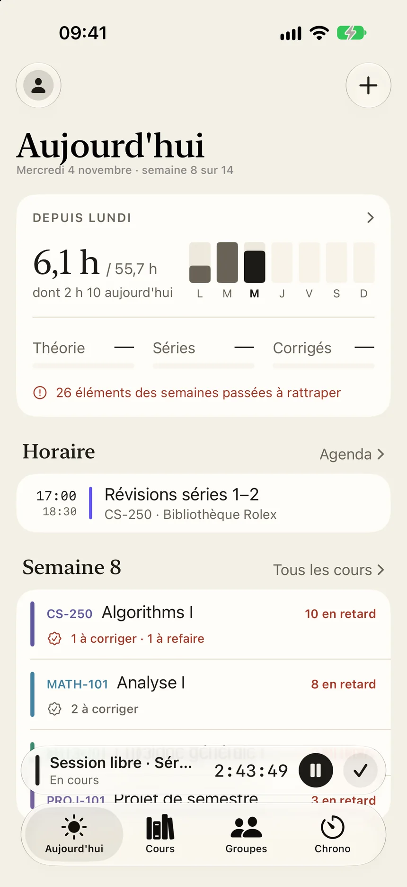
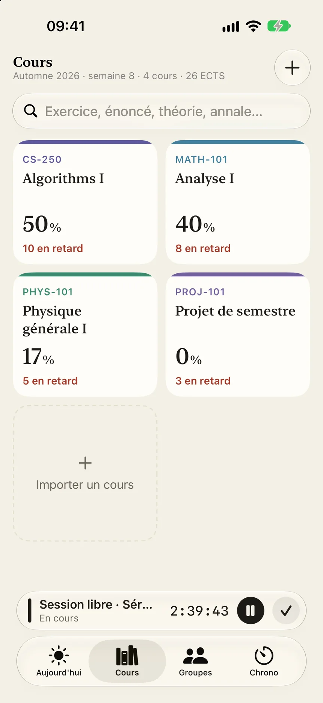
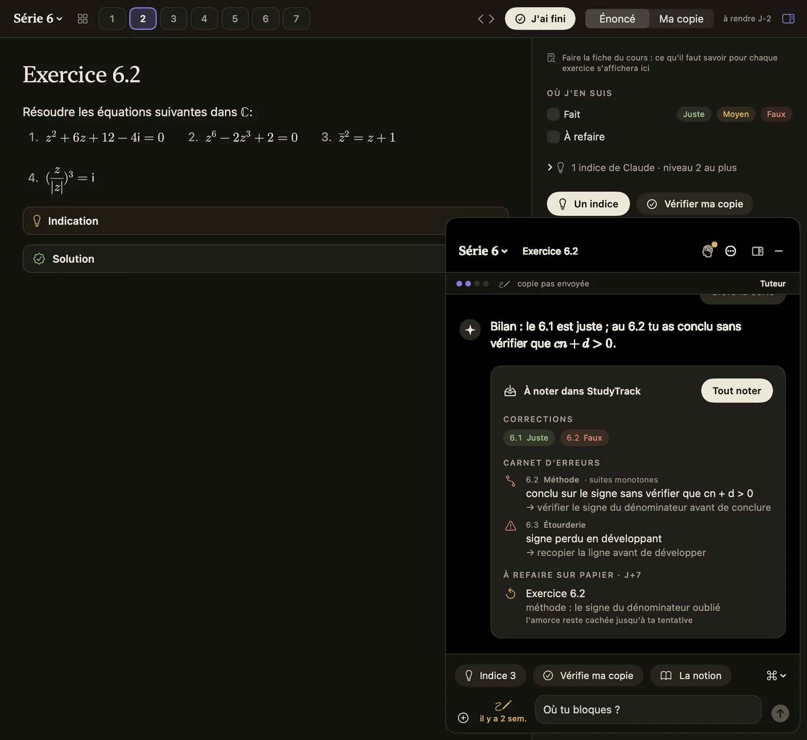
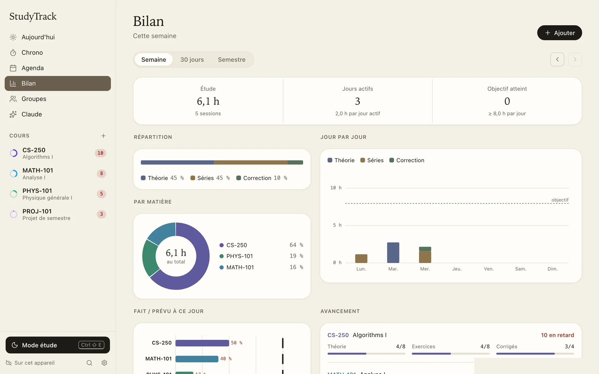
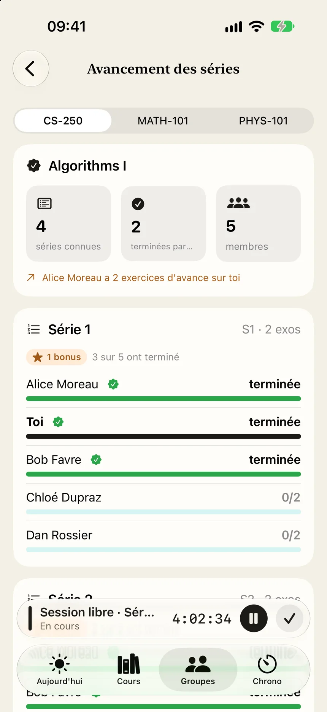

iPhone
Public beta on TestFlight
Join the betaFirst install TestFlight from the App Store, then open the beta link on your iPhone.
Imagery © swisstopo · Sentinel-2 cloudless 2020, EOX · buildings © swisstopo
Exercise sheets, solutions, MOOCs: Polymestre fetches it all for you.
Free and ad-free · open source on GitHub · made with ❤️ by hczr
Your timetable and, course by course, what's coming up or has fallen behind.

Connect your accounts, and videos, exercise sheets and solutions are imported automatically from Moodle, Botafogo or Ed.

The exercise full screen with a timer, and an AI tutor that gives you hints rather than the answer and corrects your work.

Every week you know how long you worked on each exercise and each course.

Create a group with your friends: you see who's working right now and how far each of you is in the exercise sheets.

The app syncs your data securely. No ads, no trackers. Privacy
Public beta on TestFlight
Join the betaFirst install TestFlight from the App Store, then open the beta link on your iPhone.
macOS 14 or later
Download for MacOpen the downloaded file and drag Polymestre into Applications.
Windows 10 and 11, 64-bit
Download for WindowsRun the installer. If Windows shows the blue SmartScreen screen, click “More info”, then “Run anyway”. MSI installer: download.
Something wrong? Write to us from the app (Settings then “Report a problem”) or at contact@polymestre.ch.